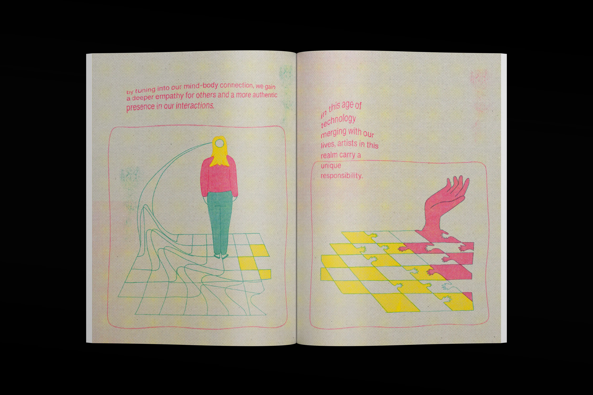
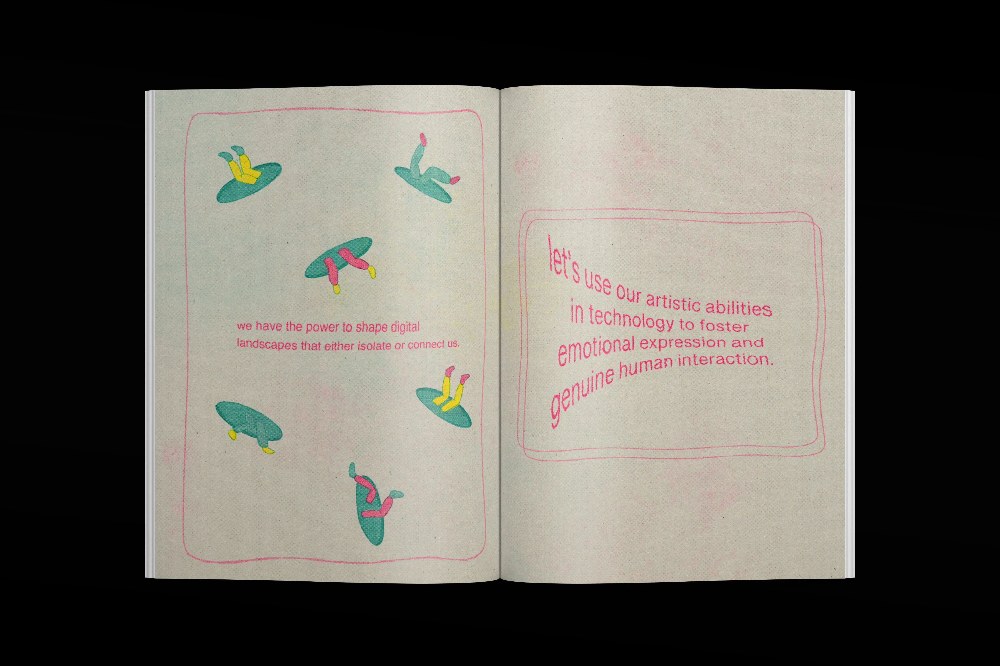
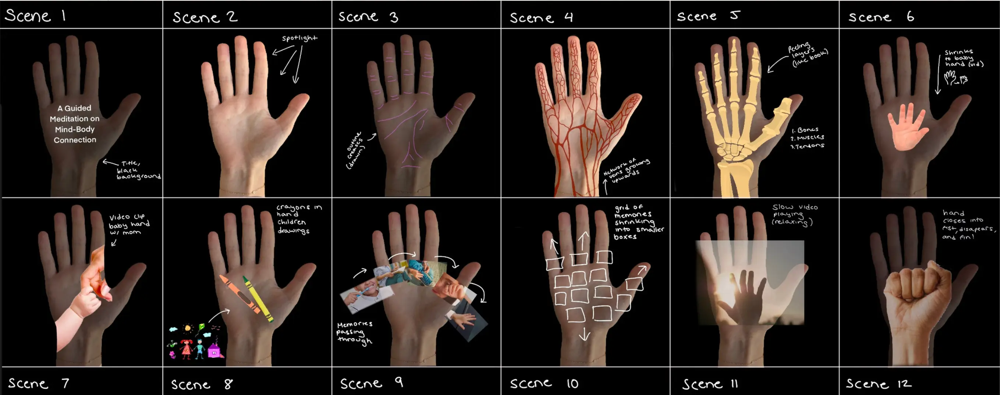
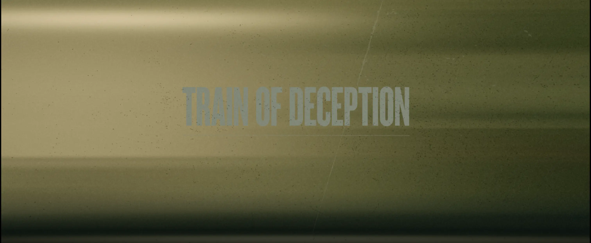
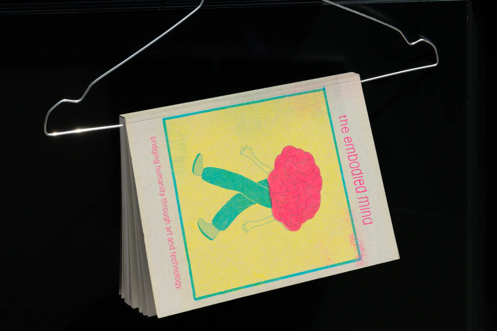
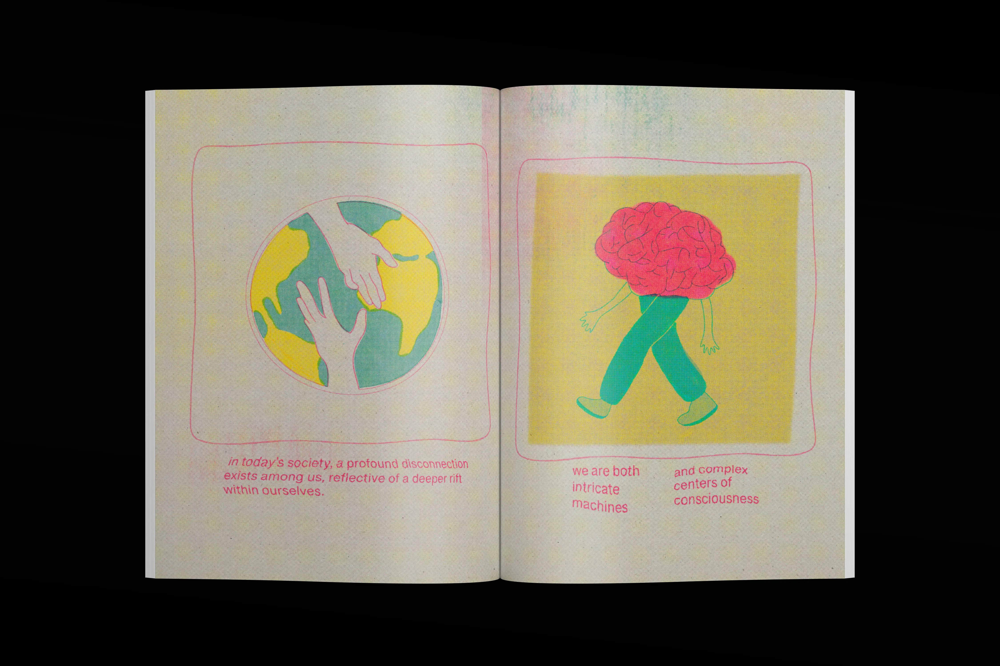
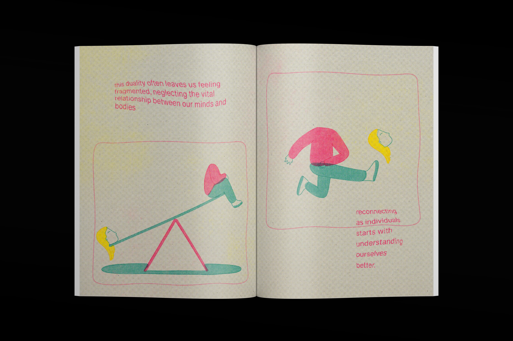
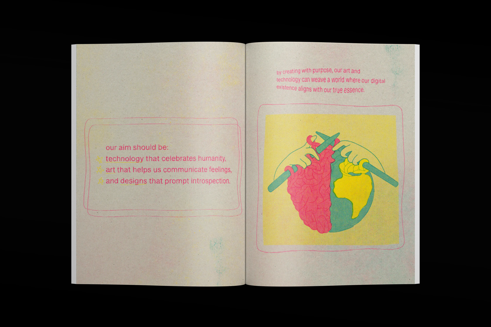

Landing Page Design, MyInterview
Visit the live landing page here or scroll through it below.
This landing page was built by following MyInterview's design system and creating custom layouts in Figma, ensuring it aligns with the company’s brand and user experience principles. The design incorporates dynamic pacing, subtle motion effects, and reveal-on-scroll animations to enhance user interaction. After finalizing the design in Figma, I developed and launched the page using HubSpot, ensuring it is fully responsive and optimized for user engagement across devices.
Tools & Skills:
Design: (Figma, MyInterview Design System)
Interaction Design & development: (HubSpot)
Landing Page Design, Train of Deception

Data-Driven Coffee Packaging
Traditional coffee packaging often relies on text—processing methods, tasting notes, and altitude—to describe flavor. But for visual thinkers, these descriptions can feel abstract. What does “light-bodied with fruity notes” actually look like?
To capture the essence of flavor beyond words, I created a generator that translates coffee profiles into living visuals—where color, shapes, and layers intuitively reveal the taste, body, and feel of each bean.
I wanted to create a design system that translates coffee’s environmental data into form. Inspired by the mountain ranges where Colombian coffee beans are grown, the generator maps data points like altitude and temperature into design elements—altitude determines the number of mountain layers, while temperature controls the sharpness of peaks. Humidity impacts body, with fuller coffees forming wide, flowing waves and lighter ones appearing as condensed peaks.
The final output places this visualization onto coffee packaging, where each design intuitively reflects the a coffee bean’s unique flavor profile.

This project was built by structuring coffee data from Cafe Granja la Esperanza's beans in a CSV file and integrating it into the generator using JavaScript. The system processes environmental variables through an API pipeline, mapping them to visual elements. The interface and interactions were designed using HTML, CSS, and JavaScript, translating raw data into a dynamic, responsive visualization.
Tools & Skills:
Frontend development: (CSS, HTML, JavaScript)
Data Processing & Visualization: (CSV, JavaScript)
Packaging Design: (Adobe Indesign)
Visualizing Fear: A Speculative Editorial for The Atlantic
This project reimagines The Atlantic’s article “Inside the Dangerous, Secretive World of Extreme Fishing” as an interactive editorial, where text is revealed through a beam of light. As users scroll, the screen darkens, forcing them to navigate the story as if searching through deep, dark waters. The goal is to mirror the tension and unease of the story itself.
(Visit the live site here)
This editorial experiment translates tone into interaction, using motion, darkness, and controlled visibility to create an immersive reading experience. The scrolling mechanic shifts the user’s control—the deeper they go, the darker the screen becomes.
Tools & Skills:
Frontend development (CSS, HTML, JS)
UX/UI & Interaction Design (Figma)
Halloween 1978 Title Sequence Reimagined
Inspired by Kazland’s painting "Welcome to Shadow Land," this reimagined title sequence for Halloween (1978) blends eerie abstraction with bold, graphic minimalism. The design distills horror into its purest visual elements—sharp geometric forms, stark color contrasts, and unsettling typography—creating a sequence that feels both nostalgic and contemporary.


A stark, minimal composition transforms classic horror imagery into sharp, fragmented symbols that shift through 3D space while retaining a flat, graphic quality. This contrast between depth and flatness enhances unease, with distorted, jagged typography set against a clean, rigid sans-serif. Motion is deliberate—slow builds of tension interrupted by sudden, erratic shifts, using pacing and negative space to mimic the film’s psychological horror.
Tools & Skills:
Motion Graphics (Adobe AfterEffects)
Graphic Design (Adobe Illustrator)
Logo Animations for PepsiCo Lab Chats
As part of my work at El Autobús for PepsiCo, I created animated logos for PepsiCo LabChats, a platform dedicated to fostering innovation and dialogue.

Using After Effects and Photoshop, I designed motion graphics that bring the brand’s identity to life—capturing its forward-thinking energy through dynamic movement and fluid transitions.
Tools & Skills:
Motion Graphics (Adobe AfterEffects)
The Embodied Mind Manifesto
This zine-manifesto explores the responsibility of design in digital spaces. It calls for technology that fosters human connection, emotional depth, and artistic integrity.




Designed with freeform layouts, hand-drawn illustrations, and a textured, imperfect print aesthetic, the zine reinforces its message through form. Expressive typography and layered compositions mirror the fluidity of digital interactions, while the analog-inspired imperfections challenge the polished nature of online spaces. It is both a critique and a call to create with intention, connection, and depth.
Tools & Skills:
Illustration (Procreate, Adobe Illustrator)
Editorial & Layout Design (Adobe InDesign)
Projection Mapping Meditation
An immersive meditation experience using projection mapping on the hands to deepen the mind-body connection through visual storytelling.
The experience transforms the hand into a canvas, with light and movement responding to subtle gestures. Abstract visuals pulse and shift in sync with breath and motion, reinforcing a sense of presence. The interplay of soft gradients, organic shapes, and rhythmic transitions enhances mindfulness, creating a meditative state through light and interaction.
Tools & Skills:
Projection Mapping (MadMapper)
Video Editing (Adobe AfterEffects, Procreate)